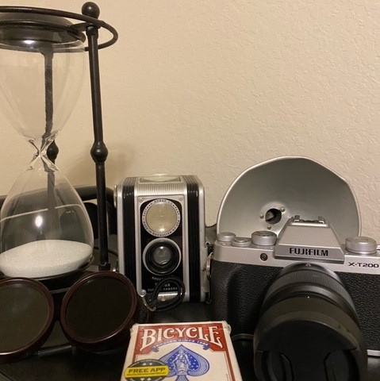

This webpage is by Aiden LaBruno
This webpage is for the Spring 2021 Journalism Design Toolkit class as part of the Journalism+Design department at Eugene Lang College for Liberal Arts at the New School University. The Back End of the Website is here Github.
My name is Aiden LaBruno and I am currently enrolled in the Journalism and Design toolkit course at The New School. I am based out of the Houston area right now, but originally I am from Jersey City, NJ. I moved to Texas in 2013 and have lived here ever since.
Some of my hobbies include photography, exercise, film, drawing, and video games. You can view my assignment photographs here Photos and some of my personal photographs or here Darkroom. And you can see more from my Instagram. My poster can be found here Poster. My final project Magazine can be downloaded as well. Also below is a short video I made for my First Year Seminar.